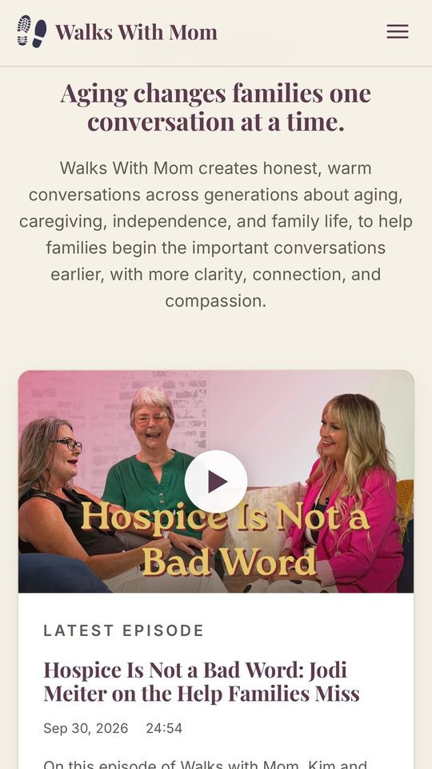

Aging, caregiving, and family life
Walks With Mom
Turns the show’s archive into a searchable library filtered by topic. It introduces both hosts, brings in guests and sponsors, and gives the show a place to announce what comes next.
- A searchable episode library, filtered by topic
- Host profiles, plus guest and sponsor applications
- A page for future projects, including a book